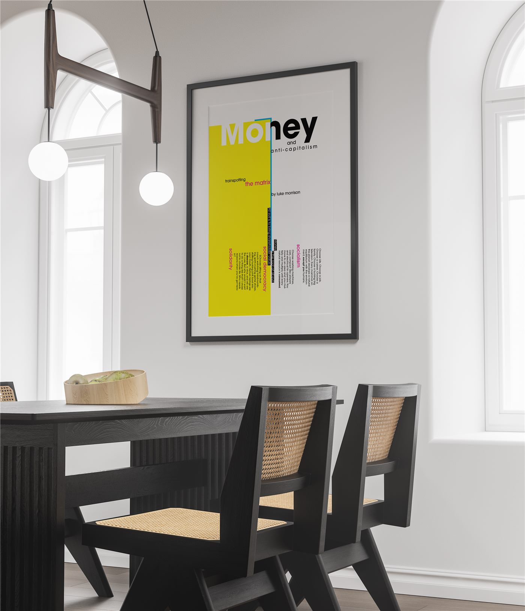

Poster work In Print
Three typographic posters from the same class work as the manifesto booklet: two built on the yellow, black, and red system, and one framed piece built on the Trainspotting monologue. Click any poster to view it up close.

01 / 03 · POSTER
Poster I
A typographic poster on the same yellow, black, and red system as the manifesto, built to read at a distance.

02 / 03 · POSTER
Poster II
A long-format piece working the same system in a different aspect ratio.

03 / 03 · MOCKUP
Money & Anti-Capitalism
A typographic poster built on the "Choose life" monologue from Trainspotting, with nods to The Matrix. Shown as a framed room mockup.